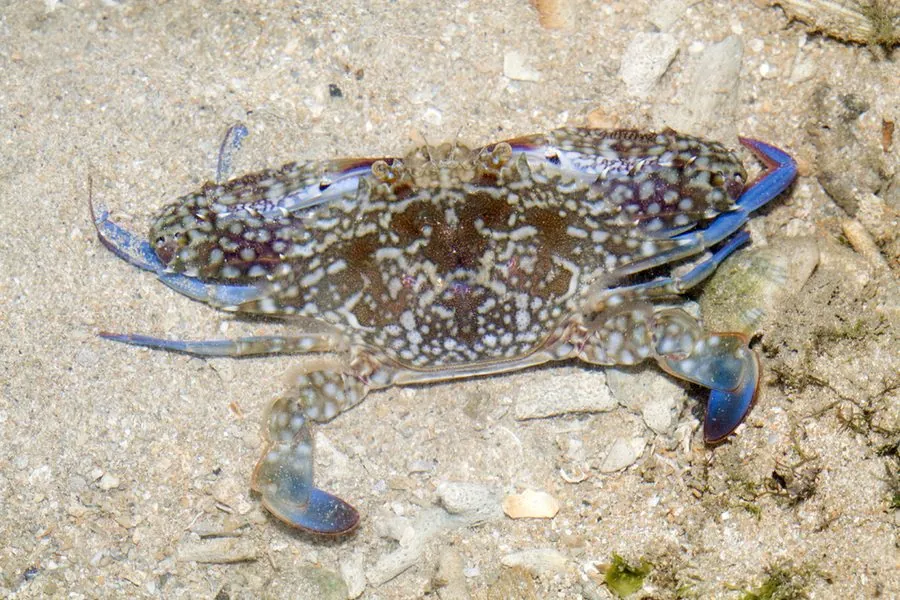

甲壳动物 · 动物界
远海梭子蟹 Portunus pelagicus

雄蟹呈蓝褐色带白斑、雌蟹黄褐色的梭子蟹，游泳能力强，广泛分布于印度—西太平洋，是重要经济蟹类。
- 分类
- 门节肢动物门纲软甲纲目十足目科梭子蟹科属梭子蟹属
- 栖息环境
- 沿岸至浅海的沙泥底、海草床和红树林边缘
- 地理分布
- 印度—西太平洋，从东非到东南亚、中国南部和澳大利亚北部
- 保护级别
- 暂无评估
物种志
远海梭子蟹头胸甲呈梭形，甲面有颗粒，前侧缘有锯齿，末对步足扁平如桨。雄蟹体色蓝褐或蓝绿色，带白色斑点，螯足细长；雌蟹体色黄褐或暗红，斑点不明显。
它生活在沿岸至浅海的沙泥底和海草床，善于游泳和潜沙，昼伏夜出，捕食贝类、小鱼、虾蟹和底栖动物。远海梭子蟹原产于印度—西太平洋，从东非、印度到东南亚、中国南部和澳大利亚北部都有分布，是当地重要的经济蟹类。雌蟹一次产卵可达数十万粒，幼体浮游发育后沉底。它以海捕和养殖供应市场，在红树林和浅海生态系统中也是捕食者之一。远海梭子蟹在繁殖季节，雄蟹会守卫自己的领域，驱赶其他雄蟹，争夺交配机会。
形态与习性
- 食性捕食贝类、小鱼、虾蟹和底栖动物
- 体型头胸甲宽约 12–20 cm
- 雌雄差异雄蟹蓝褐带白斑，雌蟹黄褐色
- 习性善于游泳和潜沙，昼伏夜出
- 繁殖雌蟹一次产卵可达数十万粒
- 经济印度—西太平洋重要经济蟹类
趣味知识
- 远海梭子蟹的雄蟹是蓝褐色的，雌蟹却是黄褐色，很容易区分。
- 它的最后一对步足扁平如桨，游泳能力很强。
- 远海梭子蟹分布很广，从东非一直到澳大利亚北部都能见到。